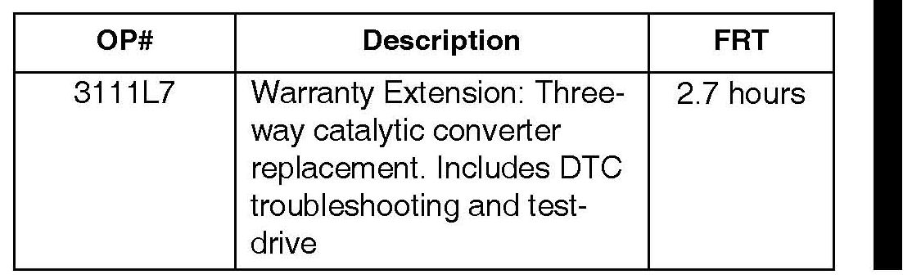

Campaign - Catalytic Converter Warranty Extension
11-018December 20, 2011
Applies To:
2007 MDX - Check the iN VIN status for eligibility
Warranty Extension: Rear (Bank 1) Warm-Up Three-Way Catalytic Converter (Supersedes 11-018, dated August 17, 2011, to revise the information marked by the black bars and asterisks)
*REVISION SUMMARY
^ The BACKGROUND and the WARRANTY CLAIM INFORMATION were changed.
The CORRECTIVE ACTION and the REPAIR PROCEDURE were removed.*
BACKGROUND
*American Honda has extented the warranty on the rear (bank 1) warm-up three-way catalytic converter to 10 years from the original date of purchase or 120,000 miles, whichever comes first. Under the warranty extension, the replacement of the catalytic converter is covered if it is replaced due to DTC P0420.
NOTE:
Make sure that Service Bulletin 11-017, Product Update To Prevent Hear (Bank 1) Catalyst Damage, Which May Set DTC P0420, has been done.*
CLIENT NOTIFICATION
All owners of affected vehicles will receive a notification of this warranty extension. An example of the client notification is at the end of this service bulletin.
Before doing work on a vehicle, verify its eligibility by doing an iN VIN status inquiry.
PARTS INFORMATION
Rear Warm Up Three Way Catalytic Converter:
P/N 18290-RYE-A00
Gasket (WU TWC to cylinder head):
P/N 18115-RCA-A01
Gasket (A-pipe to WU TWC, two required):
P/N 18212-SA7-003
Gasket (A-pipe to TWC): P/N 18393-SDB-A00
Self-locking Nut (at the engine, four required):
P/N 90212-RCA-AO1
Self-locking Nut (exhaust pipe A, nine required):
P/N 90212-5A5-003
WARRANTY CLAIM INFORMATION

*NOTE:
The warranty extension only covers replacement of the rear (bank 1) warm-up three-way catalytic converter if the troubleshooting for DTC P0420 indicates replacement is needed. Warranty claims for other repairs are not covered.*
Failed Part: P/N 18290-RYE-A00
Defect Code: 5M100
Symptom Code: R9200
Skill Level: Repair Technician

Disclaimer